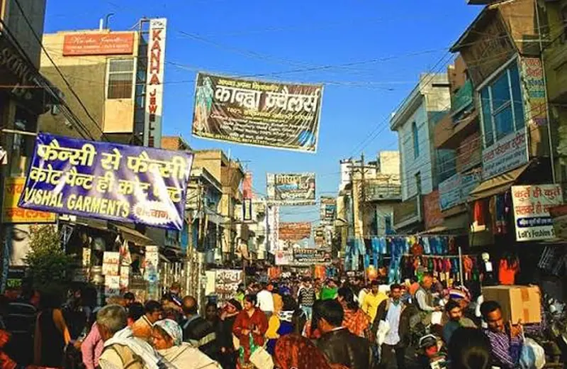
Street food
Sadar Bazaar lanes
Old Gurgaon's wholesale market is also its best snack stop, known for kebabs and desi street food. Gandhi Ji Pakoda Wale is the name to look for while you shop for utensils and home goods.
Open in Maps →
Eat. Post. Repeat.
pakoda first, craft beer laterStart with hot pakoras in Old Gurgaon and end with craft beer under the lights of an open-air market.
Showing 27 of 27 places

Old Gurgaon's wholesale market is also its best snack stop, known for kebabs and desi street food. Gandhi Ji Pakoda Wale is the name to look for while you shop for utensils and home goods.
Open in Maps →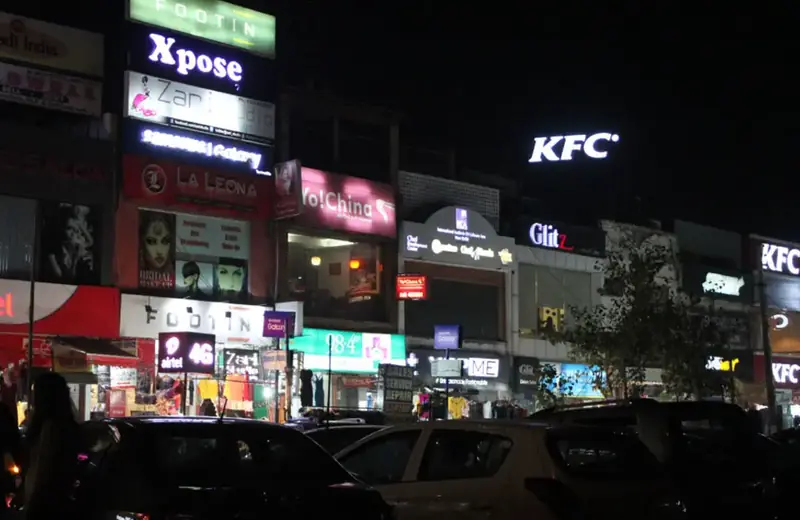
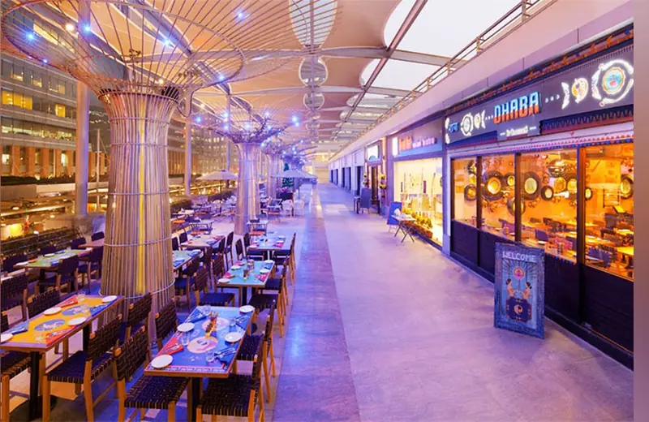
Budget-friendly joints serving global flavours like tacos and burgers.
Open in Maps →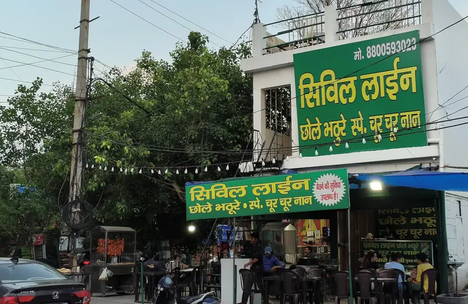
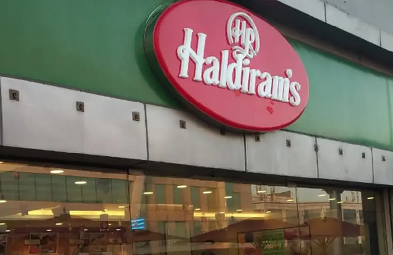
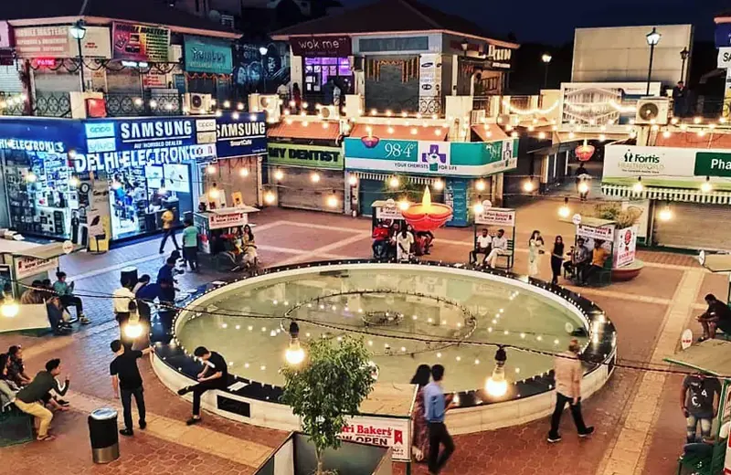
Cobbled paths, high-end boutiques, bookstores and salons, with quirky cafés, microbreweries and street food with a modern twist tucked in between. Good for a slow evening.
Open in Maps →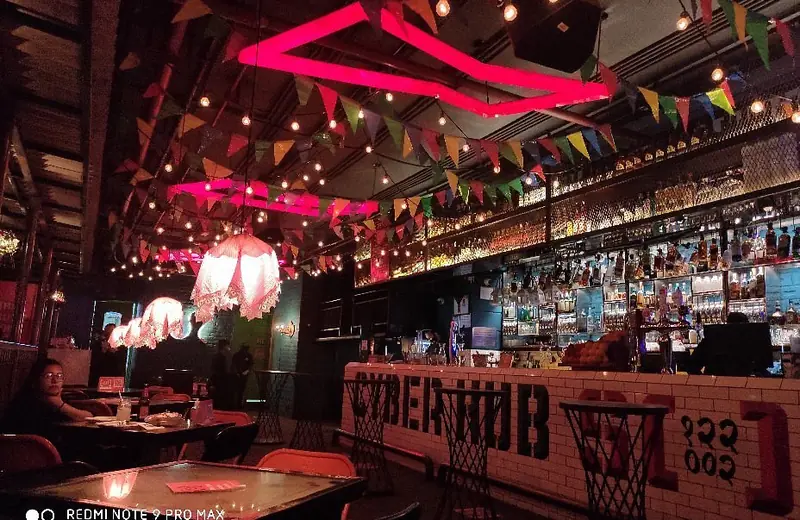
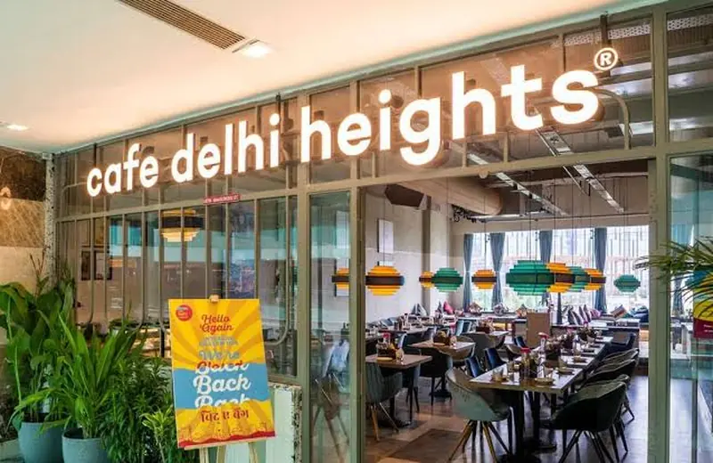
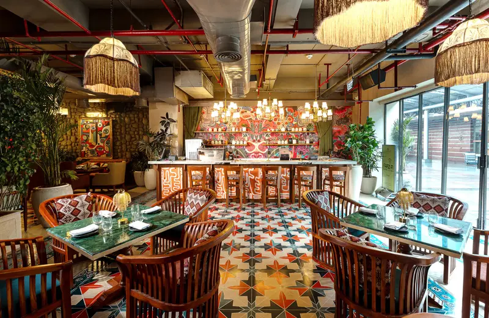
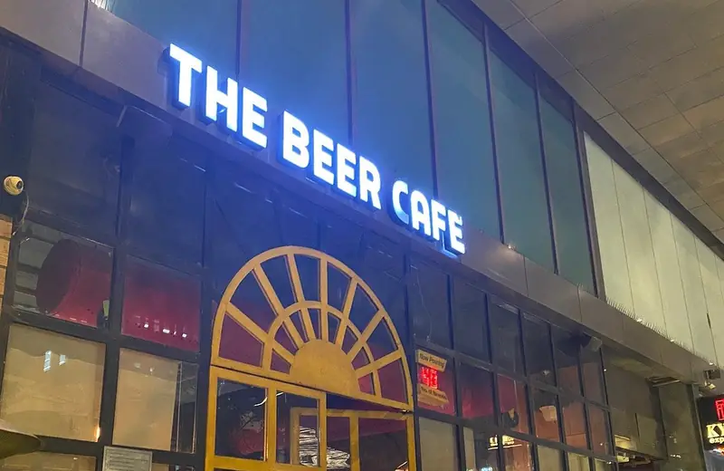

A gourmet grocery store inside Galleria Market. Stop in for specialty ingredients before or after dinner.
Open in Maps →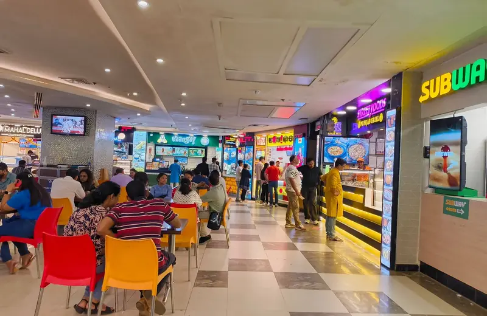
Ambience puts fashion, food and entertainment under one roof, which makes it an easy pick for a family day out.
Open in Maps →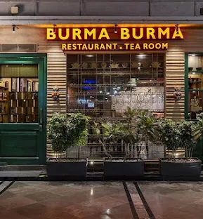
Known for Burmese curries, noodle bowls, tea leaf salad and distinctive Asian flavours.
Open in Maps →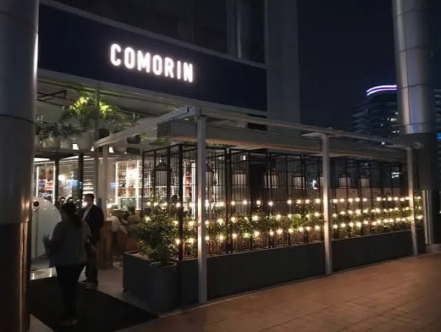
A great option for creative Indian food, interesting small plates and a more premium dining experience.
Open in Maps →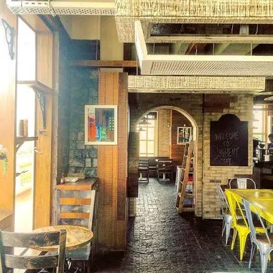
Popular for breakfast, waffles, French toast, coffee and relaxed catch-ups.
Open in Maps →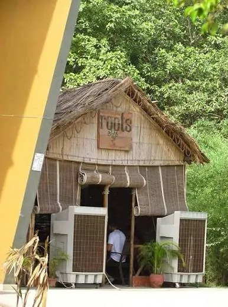
A greenery-filled, open-air option for breakfast, brunch and a slower afternoon away from busy malls.
Open in Maps →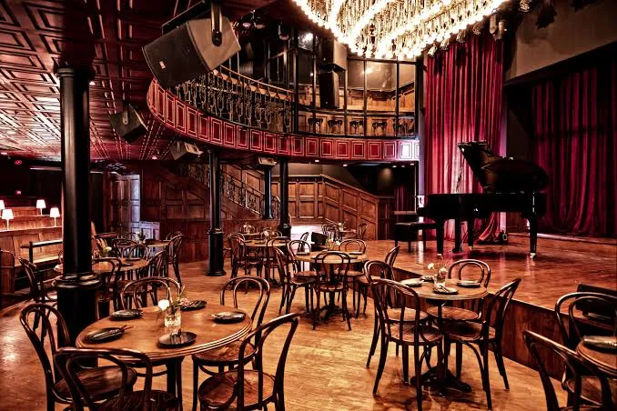
Ideal for an evening with live jazz, drinks, food and a more intimate atmosphere. Check the performance schedule before visiting.
Open in Maps →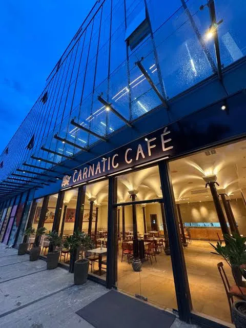
A good pick for Karnataka-style dosas, chutneys and filter coffee.
Open in Maps →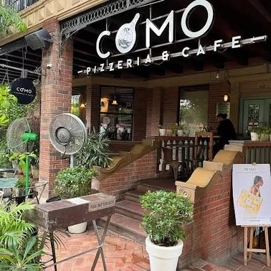
Worth considering for pizza, pasta and a casual Italian meal with friends.
Open in Maps →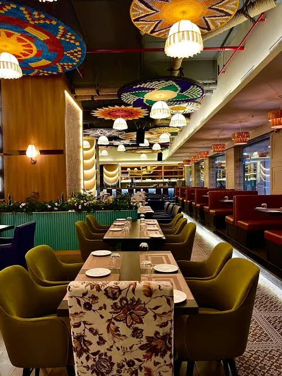
Known for kebabs, tandoori platters and North Indian dishes.
Open in Maps →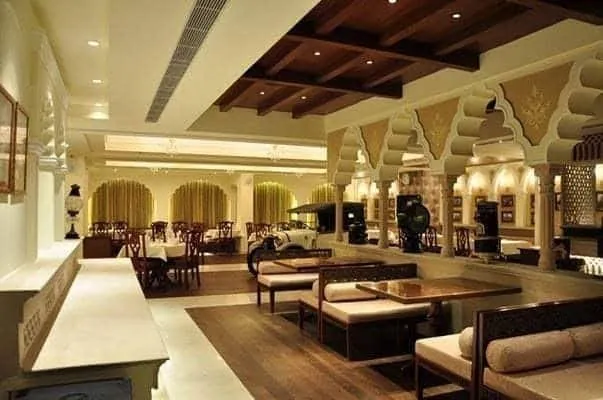
A themed dining experience with traditional Indian dishes and royal-style interiors.
Open in Maps →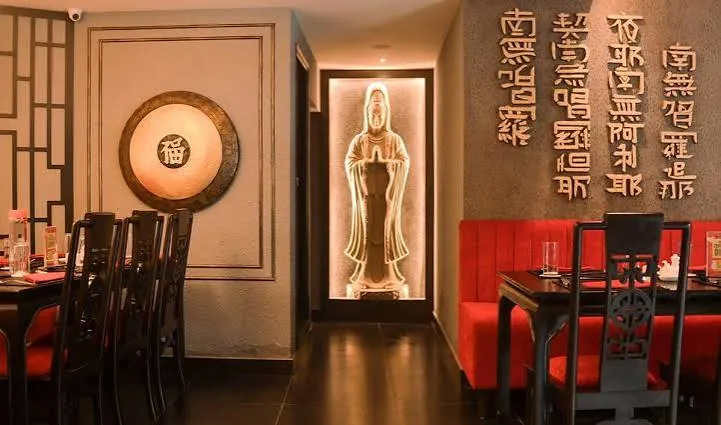
A casual option for noodles, chilli chicken, dumplings and Chinese-style meals.
Open in Maps →A sit-down option for dosas, idlis, upma and other vegetarian dishes.
Open in Maps →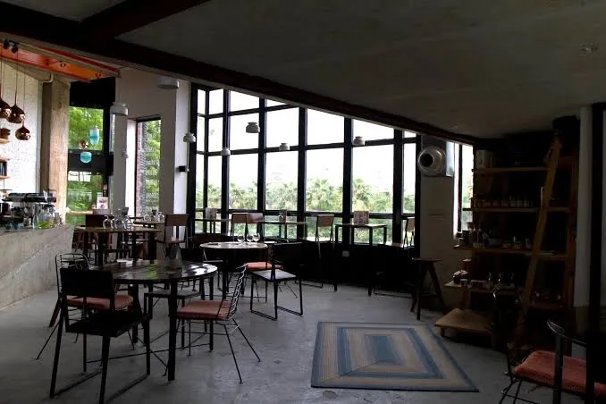
A good choice for plant-forward meals, wholesome bowls and a relaxed café atmosphere.
Open in Maps →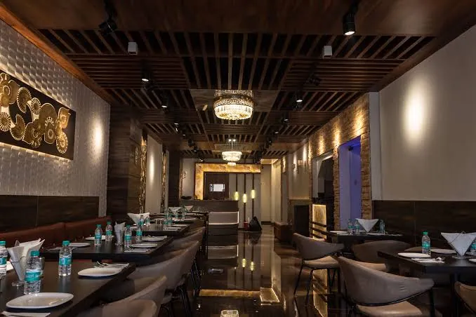
A practical option for family meals, tandoori starters and group dining.
Open in Maps →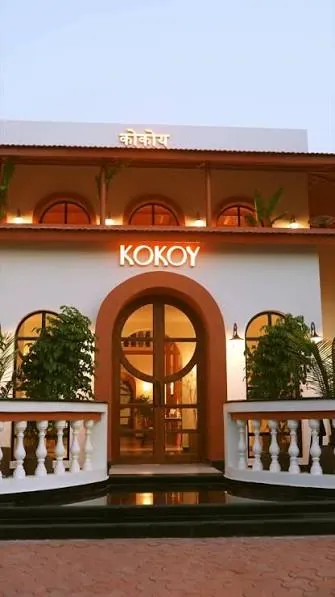
A greenery-facing café for brunch, coffee, pizza and leisurely catch-ups.
Open in Maps →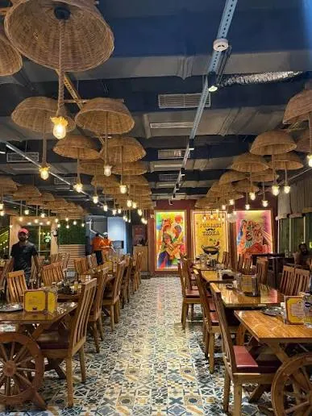
For hearty dhaba-style food, parathas, rotis and filling curries.
Open in Maps →Know a food spot that belongs here? Add it on the Share a Tip page.